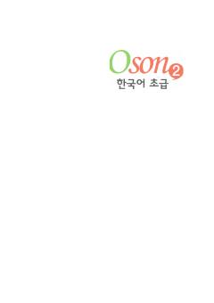

O2O'zbek tilida so'zlashuvchilar uchun mo'ljallangan koreys tili boshlang'ich darajadagi darsligi.
Ushbu darslik O'zbekistondagi koreys tili o'rganuvchilari uchun maxsus ishlab chiqilgan bo'lib, o'zbek tilidagi tushuntirishlar orqali grammatika va so'z boyligini o'zlashtirishni osonlashtiradi. Kitob TOPIK 2-daraja talablariga mos keladigan to'rt ko'nikmani rivojlantirishga qaratilgan integratsiyalashgan o'quv qo'llanmasidir.